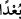

Gemi, su üzerinde yüz elli gün kalmıştı. Mü’minler, bir ay da Cûdî’nin üstünde tutan
gemi böylece altı ay yüzmüş oldu. Mü’minler gemiden Aşûrâ günü indiler.” Bu konuyla
ilgili mâlûmat aşağıda gelecek.
“Haksızlık yapan kavim yok olsun!” denildi.” Âyetteki “
” kelimesi Arapların,
helâk olup ölme mânâsında şiddetli bir uzaklaşmayı ifade etmek istedikleri zaman
kullandıkları sözlerinden olup “helak olsunlar” mânasına gelmektedir. Bu ifade, helâk
olmaları için yapılmış bir bedduâ olup Allah kullarına, zâlimler hakkında nasıl
bedduâda bulunacaklarını öğretmektedir. Yâni, “haksızlık eden bu kavim yok olarak
uzaklaşıp gitsin!” demektir.
“
”deki lâm kime bedduâ edildiğini açıklamaktadır Yani “Bu söz bunlar hakkında
söylendi.” demektir. Burada kavmin “haksızlık etme” vasfına temas edilmiş olması,
helâk edilmelerinin illetinin bu vasıfları olduğunu göstermek içindir. Burada ayrıca
haksızlık etme ve yalanlama konusunda onların yolundan gidenlerin de böyle bir helâki
ve bedduâyı hak edecekleri üstü kapalı olarak bildirilmektedir.
el-Miftâh’ta der ki: “Allah Teâlâ onlara öfkeli olduğunu ve bu helâki hak ettiklerini
göstermek için kelâma bu şekilde son vermiştir. Çünkü helâk edilmelerine dâir
bedduâsını, bunlar helâk olduktan sonra yapmaktadır.”
Ebu’l-Âliye’nin şöyle dediği rivâyet edilmiştir: Nûh’un gemisi sabitleşip karaya
oturunca bir bakmış ki İblis geminin arka tarafında oturuyor. Nûh (a.s.) İblis’e:
“Yazıklar olsun sana! Yeryüzündekilerin tamamı senin yüzünden boğuldu, hepsini
helâk ettin!” demiş.
İblis de Nûh (a.s.)’a:
“–Peki ne yapabilirim?” deyince, Nûh (a.s.):
“–Tevbe edebilirsin.” demiş. İblis:
“–Öyleyse Rabb’ine sor bakalım benim için tevbe imkânı var mı?” demiş.
Nûh (a.s.) da Rabb’ine duâ etmiş. Allah Teâlâ Nûh (a.s.)’a:
“–Onun tevbesi, Âdem’in kabrine secde etmesidir.” diye vahyetmiş. Bunun üzerine
Nûh (a.s.) İblis’e:
“–İsteğini yerine getirdim.” dedi. İblis:
“–Peki nasıl olacak?” deyince Nûh (a.s.):
“–Âdem’in kabrine secde edersen tevbe etmiş olacaksın.” demiş. Fakat İblis:
“–Ben ona diriyken secde etmedim, ölüyken mi edeceğim!” diye cevap vermiş.
Burada mezardayken Hz. Âdem’e yapılan secdenin mezarda değilken yapılan secde
gibi olduğuna işâret vardır. Çünkü peygamberler (aleyhimü’s-selâm), Rableri katında
diridirler. Kâmil veliler de böyledir. Nitekim Sâib şöyle der:
Ölümleriyle gönül ehlinden meded beklemekten ümitsiz olma!
Çünkü âgâh olan kâmil kişinin uykusu aynen uyanıklık gibidir